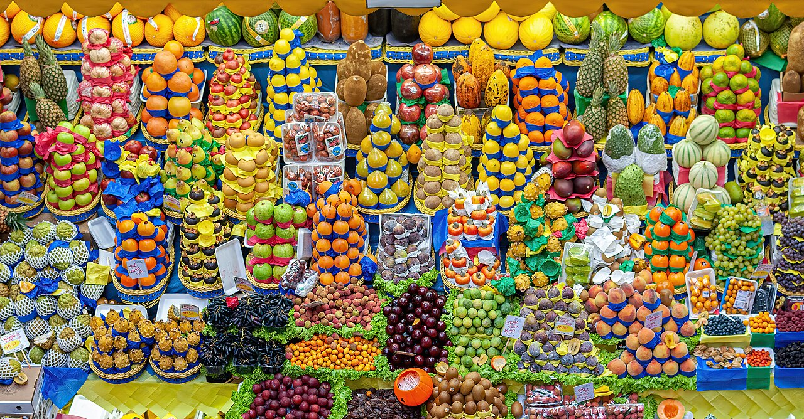
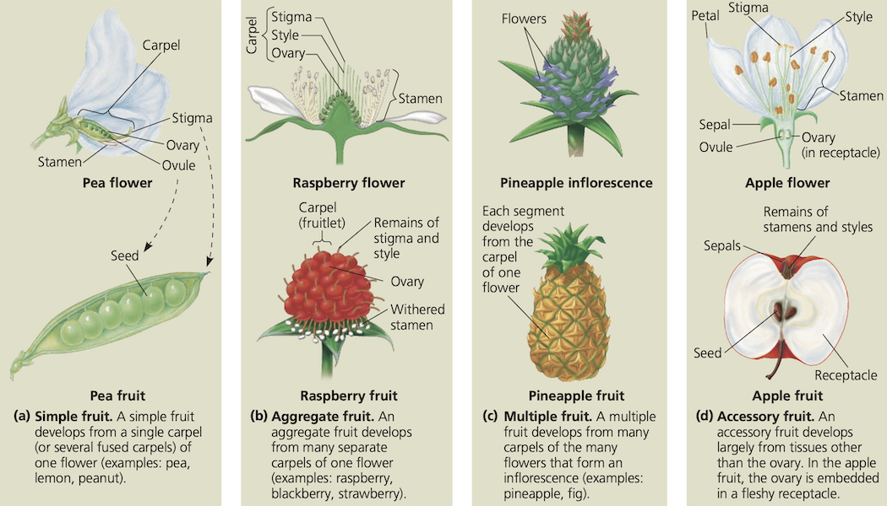
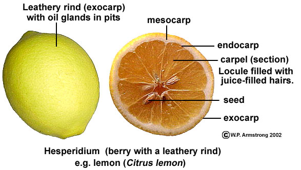

Fruto: laboratorio
Grupo de Estudios Botánicos GEOBOTA
Universidad de Antioquia
Biología de las Plantas (2025-2)
Introducción
Angiospermae: ciclo de vida

Fig 1: Ciclo de vida de Angiospermae. LadyofHats, Public domain, via Wikimedia Commons.
{kind=link}
Semilla: tamaños
{kind=link}
Semilla: definición
Estructura producida a partir de un óvulo fecundado mediante la cual se reproducen todas las plantas con semilla. Está compuesta por un embrión y, por lo general, una cubierta seminal, además de endospermo; constituye la parte reproductiva de un fruto; corresponde a un megasporangio con tegumentos. Beentje (2016).
- Importancia en sistemática
- Tamaño, forma, color, superficie de la testa, hilo, rafe
- Semillas endospérmicas (albuminosas) y endospérmicas (exalbuminosas)
- Embrión (esporófito inmaduro)
- Epicótilo, cotiledones, hipocótilo, radícula
- Germinación epígea, hipógea, vivípara
{kind=link}
Semilla: partes

Fig 5: Partes de la semilla. Simpson (2019).
Frutos: diversidad
Fig 6: Diversidad de frutos. Wilfredor, CC BY-SA 4.0, via Wikimedia Commons.
{kind=link}
Fruto: definición
Un ovario maduro y desarrollado (o un grupo de ovarios) que contiene las semillas, junto con cualquier parte adyacente que pueda estar fusionada con él en la madurez. Evert & Eichhorn (2013).
{kind=link}
Frutos: tipos
Fig 9: Tipos de fruto según su origen. Urry et al. (2020).
Frutos: tipos
- Frutos simples: originado de un solo pistilo de una flor
- Frutos agregados: originado de múltiples pistilos de una única flor
- Frutos múltiples: originado de la fusión de varias flores
Fig 10: Origen de los tipos de fruto. Las partes rosadas son las corolas de las flores y las partes verdes son los pistilos, cada pistilo consiste en un ovario en forma de huevo con su estilo en forma de cuello y un estigma dividido. Conrad (2023).
Frutos: clasificación
Los frutos simples, así como la unidad del fruto de los frutos agregados y múltiples, se clasifican en función de:
- Carnoso o seco
- Indehiscente o dehiscente
- Tipo de dehiscencia
- Número de carpelos y lóculos
- Número de semillas/óvulos
- Placentación
- Estructura de la pared del pericarpio
- Posición del ovario
Unidad del fruto: corresponde a un pistilo
Frutos carnosos
La pared del fruto o la pared del ovario (pericarpo) es carnoso. Generalmente indehiscente.
- Baya
- Hesperidio
- Pepónide
- Drupa
- Pomo
Frutos carnosos: baya
Fruto simple indehiscente con una a muchas semillas sumergidas en una pulpa carnosa. Beentje (2016).

{kind=link}
Frutos carnosos: hesperidio
Baya carnosa con una cáscara coriácea, la parte carnosa dividida en gajos (como una naranja) y múltiples semillas, cada una con una testa dura. Beentje (2016).
Fig 16: Citrus × limon (Rutaceae). Armstrong (2023).
Frutos carnosos: pepónoide
Frutos carnosos: drupa
Fruto carnoso indehiscente con las semillas encerradas en un endocarpo óseo. Beentje (2016).


Frutos carnosos: pomo
(en Rosaceae) Fruto simple indehiscente en la que el receptáculo o hipantio se ha agrandado para encerrar el ovario maduro. Beentje (2016).

{kind=link}
Frutos secos
Todo el pericarpio se seca y a menudo se vuelve quebradizo o duro.
Dehiscentes
Se abren al madurar
- Cápsula
- Legumbre
- Folículo
- Silicua
Indehiscentes
No se abren al madurar
- Aquenio
- Cipsela
- Cariopsis
- Nuez
- Sámara
Esquizocárpicos
Se desarrolla a partir de un solo ovario compuesto (2 o más lóculos), se divide en unidades separadas de 1 semilla (mericarpos), las cuales parecen ser un fruto distinto.
Frutos secos dehiscente: cápsula
Fruto seco dehiscente compuesto de dos o más carpelos fusionados, se abre por valvas o poros. Beentje (2016).
{kind=link}
Frutos secos dehiscente: legumbre
Frutos secos dehiscente: folículo
Vaina originada de un solo carpelo, que se abre a lo largo de la sutura interna (adaxial) a la que se unen las semillas. Beentje (2016).
{kind=link}
Frutos secos dehiscente: silicua
Fruto seco, polispermo dehiscente por dos suturas laterales, originado a partir de un ovario súpero, bicarpelar. Bonifacino (2011).
Frutos secos indehiscente: aquenio
Fruto seco, monospermo, con el pericarpo no adherido a la semilla, indehiscente, originado a partir de un ovario súpero. Bonifacino (2011).
{kind=link}
Frutos secos indehiscente: cipsela
Fruto seco, monospermo, con el pericarpo no adherido a la semilla, indehiscente, originado a partir de un ovario ínfero. Bonifacino (2011).
{kind=link}
{kind=link}
Frutos secos indehiscente: cariopsis
El fruto de Poaceae. Pequeño fruto seco de paredes delgadas, con una sola semilla fusionada con el pericarpio. Beentje (2016).
{kind=link}
Frutos secos indehiscente: Nuez
Fruto indehiscente de una sola semilla con un pericarpio duro y seco (la cáscara) que se deriva de un ovario de un solo lóculo. Beentje (2016).
{kind=link}
Frutos secos indehiscente: sámara
Fruto seco e indehiscente con un ala (más larga que la parte que lleva la semilla) desarrollada hacia un lado. Beentje (2016).
Frutos agregados
Los frutos agregados se indican como “fruto agregado de…”
- Poliaquenio
- Polibaya
- Polidrupa
- Polifolículo
- Polinuez
- Polisámara
Frutos múltiples: sicono
Fruto múltiple en el que los frutos unitarios son pequeños aquenios que cubren la superficie de un receptáculo carnoso compuesto invertido. Simpson (2019).
.jpg){kind=link}
{kind=link}
Frutos múltiples: sorosis
Procedimiento
Anatomía de la semilla
- Cortes transversales y longitudinales de semillas hidratadas de Phaseolus vulgaris, Zea mays y cualquier otra planta disponible. Observe e identifique: el embrión, el endospermo, la cubierta seminal (testa y tegmen).
Reconocimiento de frutos simples
Realice observaciones comparativas y determine el tipo de fruto simple.
Cortes transversales y longitudinales de cada fruto de los frutos simples. Observe e identifique: el número de carpelos y de lóculos, el pericarpio y las semillas.
Reconocimiento de frutos agregados
- Cortes transversales y longitudinales de los frutos de Fragaria sp., Magnolia sp., Rubus glaucus y cualquier otro fruto agregado, observe e identifique: cada una de las unidades del fruto y determine el tipo de fruto agregado.
Reconocimiento de frutos múltiples
- Cortes transversales y longitudinales de los fruto de Ananas comosus y Ficus carica y cualquier otro fruto múltiple, observe e identifique cada una de las unidades del fruto y determine el tipo de fruto múltiple. Intente identificar cualquier estructura floral o extra floral asociada.
Sustancias de reserva asociadas a los frutos
- Cortes transversales con Lugol y Sudan III o Sudan negrodel mesocarpio del fruto de Malus domestica, Musa × paradisiaca, Prunus persica, Pyrus communis, Solanum lycopersicum y cualquier otro planta disponible.